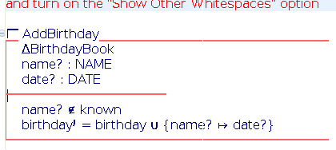
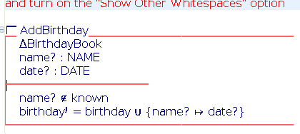

First box rendering style:

Second box rendering style:

The ISO Z Standard suggests two commonly used styles for rendering Z schemas with boxes. To conform to the standard, the CZT editor plug-in implements the two box rendering style in the Unicode mode of its editor. Here are the sample views of those two styles in the Unicode mode of the editor.
First box rendering style:
Second box rendering style:

The style, line colour and line width of the schema box can be changed in the Annotation preference page.